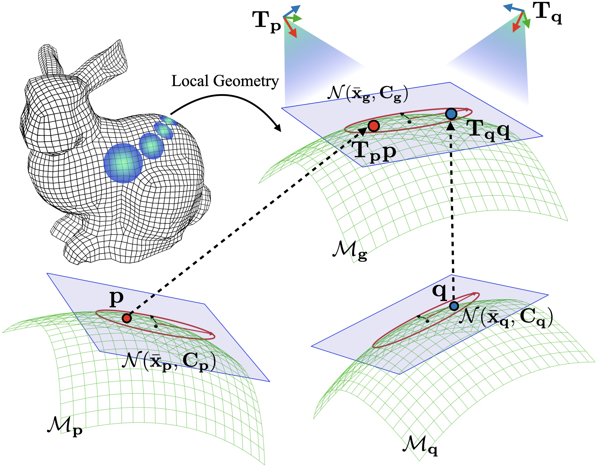
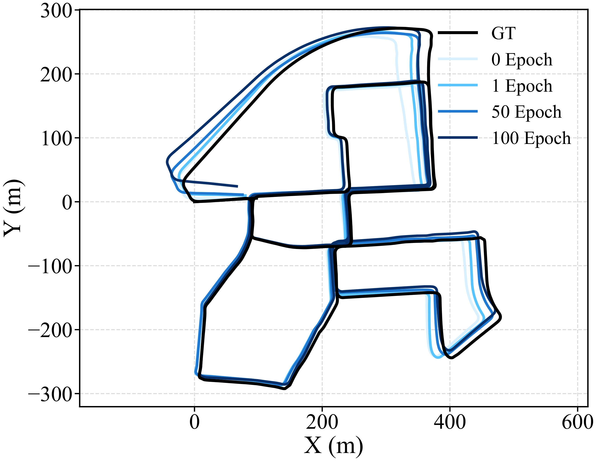

这篇论文的核心是把局部几何、匹配约束或地图表达做得更可靠，从而改进 SLAM/里程计在复杂几何、稀疏点云或退化场景下的状态估计。
1. 原文主线围绕 SLAM/里程计中的几何表达或估计稳定性展开；阅读时要把局部几何、匹配关系和后端优化联系起来看。
2. 如果作者引入自监督、学习式几何或新地图表达，关键是看它最终如何影响轨迹误差、局部地图质量和退化场景鲁棒性。
3. 从可抽取文本中反复出现的术语看，建议跟踪这些线索：LiDAR, SLAM, mapping。
《Self-supervised Geometry Reasoning for LiDAR Simultaneous Localization and Mapping》可以当成一个“机器人怎样不迷路”的故事：前端看到的是稀疏、嘈杂、动态的世界，后端却需要输出连续、可信的轨迹和地图。作者把切入点放在几何表示、匹配约束和地图更新的稳定性上，减少一个局部错误一路放大成全局漂移。 从摘要抽取到的线索看，后文会围绕 LiDAR, SLAM, mapping 展开。
1. 背景和问题：论文为什么值得读
这篇论文从 LiDAR SLAM 的局部几何瓶颈切入：稀疏点云、低线数 LiDAR 和噪声会让手工估计的协方差、对应关系、表面结构变得不稳定，前端一旦给出脏约束，后端轨迹和地图都会被拖偏。
1. SLAM/里程计的老问题是：前端几何估计不稳定会一路传导到后端优化，最后表现为漂移、错配或地图撕裂。
2. 复杂几何、低分辨率 LiDAR、稀疏区域和动态场景会让手工几何估计变得脆弱，因此作者往往试图让局部几何或匹配约束更可靠。
3. 局部几何到底如何被表示：协方差、平面、曲率、对应关系，还是可学习的几何特征？
4. 这种表示如何进入 SLAM：影响点云匹配、残差权重、后端约束，还是地图更新？
2. 方法拆解：作者真正搭了哪台机器
方法把每个点看成一个带协方差的高斯分布，用神经模块预测局部几何，再用符号推理模块检查两类一致性：对应点残差是否能被协方差解释，协方差诱导出的位姿是否和 SLAM 记忆中的位姿一致。随后把推理后的几何反馈给 SLAM，更新轨迹和对应关系，形成几何和轨迹互相修正的闭环。文中这一段反复出现的线索是 LiDAR, IMU, SLAM。
1. 几何表示：每个 LiDAR 点被看成 3D Gaussian，协方差描述局部表面形状；稀疏点云里，协方差比单个点坐标更能表达“这个点附近像不像一片稳定表面”。
2. 自监督来源：模型不用真值位姿或 dense geometry 标签，而是用对应点残差和 SLAM 估计轨迹之间的一致性来训练局部协方差。
3. 推理模块：对应 likelihood 检查点对残差能否被协方差解释；pose likelihood 检查由协方差诱导出的位姿是否贴近记忆中的 SLAM 位姿。
4. 反馈闭环：训练出的 covariance estimator 会把高各向异性的点用于采样增密，增密点云再送进 SLAM 后端更新轨迹和对应关系。
5. 工程价值：它不是替换整个 SLAM，而是作为几何增强模块插到现有 LiDAR SLAM 前端，让低线数或稀疏输入更接近高质量几何约束。
3. 主图和关键图解：先沿着数据流走一遍

图 1 · Fig. 2: A visualization illustrating how the underlying geom-
这张图是在解释几何建模或约束构造。读图时先分清输入点、局部几何、对应关系和位姿变换分别是什么，再看这些量如何进入 SLAM 前端或后端。

图 2 · Fig. 3: Raw and densified point clouds. (a) Raw 32-channel
这张图更适合看结果验证：轨迹是否贴近真值、迭代是否收敛、地图或局部结构是否因为新模块变得更稳定。
4. 实验验证：证据链是否站得住
实验把 KITTI Sequence 00 降采样成 64、32、16 线 LiDAR 设置，用 VGICP 作为后端，比较原始点云和几何推理后点云。读实验时要同时看 300 帧区间 RPE、全局配准成功率和稀疏输入下的收益，因为这决定它是否真的帮 SLAM 抗退化。
1. 数据设置很克制：作者用 KITTI odometry Sequence 00，把原始 64 线点云降采样成 32 线和 16 线，专门观察稀疏输入下几何推理是否有价值。
2. 后端不是作者重写的庞大系统，而是轻量 VGICP；这能说明模块更像一个可插拔几何增强层，而不是依赖特定后端的整套工程。
3. 里程计指标用 300 帧区间 translational RPE。结果显示 16 线和 32 线在 2-step 后误差分别下降约 49.5% 和 47.8%，64 线只下降约 6.0%，说明收益主要来自稀疏场景。
4. 全局配准用 TEASER，随机采 100 对距离 10m 内的扫描对，成功条件是旋转误差小于 10 度、平移误差小于 2m。
5. 配准结果也符合直觉：32 线在 1-step 时成功率提升约 6.7%，64 线本来几何就足够好，后续提升更有限。
5. 贡献边界和复现：哪些能迁移，哪些要小心
结论把贡献收束到“无真值标签学习局部几何”上；限制也很清楚，训练时间、采样策略和停止准则还会影响它能否广泛接入工程系统。
1. 贡献：围绕局部几何或地图表达改进 SLAM 的关键薄弱环节，有助于减少前端错误向后端传播。
2. 贡献：如果实验包含消融和退化场景，说明方法不只是调参，而是在机制上提高了鲁棒性。
3. 局限：局部几何方法高度依赖点云密度、传感器噪声和场景结构，跨平台迁移需要重新验证。
4. 局限：如果训练或参数选择依赖特定数据集，部署到新城市、新建筑或低成本雷达时可能退化。
5. 复现第一步：确认论文新增模块位于前端、后端还是地图表达层，避免把整个系统一次性重写。
6. 复现第二步：先在公开数据集上复现轨迹指标，再看局部地图和失败案例，不要只看平均误差。
1. 新增几何模块在极端稀疏或动态场景中是否仍有效？
2. 它提升的是前端匹配质量，还是后端优化的稳定性？
3. 如果不使用作者的数据集和参数，方法是否仍能泛化？
图像来自论文 PDF，仅用于论文解读和学术讨论，正式转载前建议核对论文许可和作者要求。